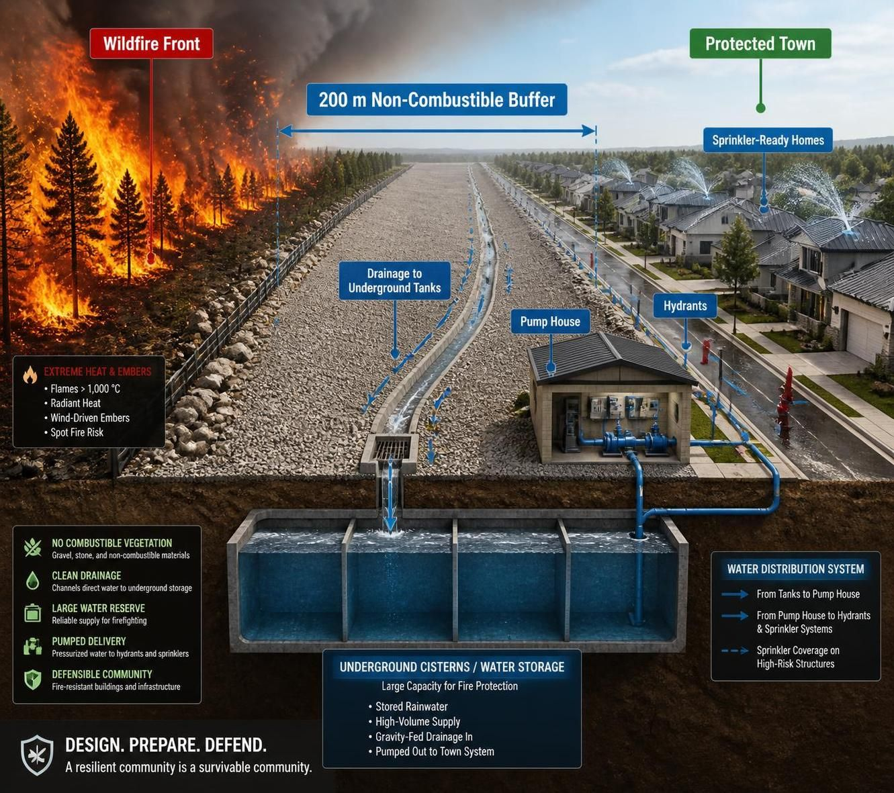

Let’s stop wildfires from destroying our towns & cities

Wildfires are becoming more destructive as hotter temperatures, prolonged drought, and longer fire seasons increase risk across North America and Europe.
Preparing towns before a wildfire arrives can reduce ignition risk, protect homes, and improve emergency response.
Canada has seen major wildfire seasons with hundreds of active fires across multiple provinces and territories, while British Columbia and other regions have faced extreme fire conditions and emergency preparedness measures. France, Spain, and other European countries are also experiencing repeated heatwaves and wildfire outbreaks. Demand for specialized firefighting aircraft such as waterbombers remains high worldwide, making it harder for communities to rely on rapid suppression alone. That is why wildfire protection, community firebreaks, ember-resistant buildings, and town wildfire planning are becoming essential parts of modern wildfire resilience.
Solutions
This concept shows the fire front, the 200 m non-combustible buffer, drainage channels feeding underground tanks, a pump house, and the defended town beyond.

200 m non-combustible buffer
No burnable material, with gravel, stone, drainage channels, and service access.
Drainage + storage
Runoff flows into underground holding tanks or cisterns, ready to support firefighting systems.
Protected town
Non-combustible buildings, hydrants, and sprinkler-ready homes with targeted sprinkler coverage where needed.
How to get involved
If you’re a town planner, architect, fire professional, university researcher, part of a community group, a member of government, or a member of the public interested in practical wildfire protection, please get in touch.
Media inquiries are welcome, and sharing this project on social media helps spread the word.
Contact
Email: admin@stopwildfires.org
Copyright
Text, diagrams, and other materials on this site are copyrighted. You may share or repost the content for non-commercial purposes with attribution and a link back to the site. Permission is required for commercial use, adaptation, or publishing modified versions.
© 2026 stopwildfires.org All rights reserved.
Support the project
If you’d like to help support this website and project, donations are welcome.